Создание отчета
После запуска
дизайнера откроется окно с пустым шаблоном отчета.
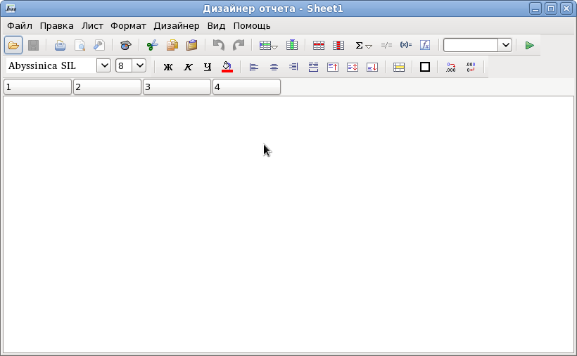
Создадим простой отчет, выводящий список строк из базы данных.
Для этого сначала настроим соединение с базой данной (меню Дизайнер | Источник данных).
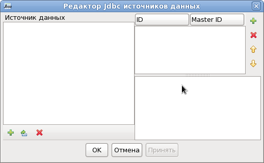
В диалоге добавляем новый источник данных и заполняем необходимые параметры для доступа к базе данных.
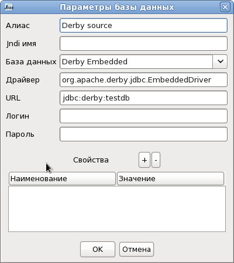
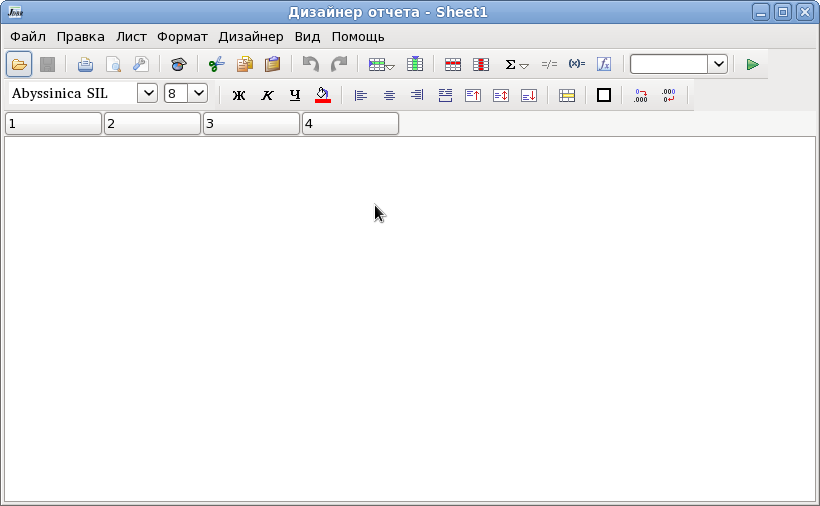
Создадим простой отчет, выводящий список строк из базы данных.
Для этого сначала настроим соединение с базой данной (меню Дизайнер | Источник данных).
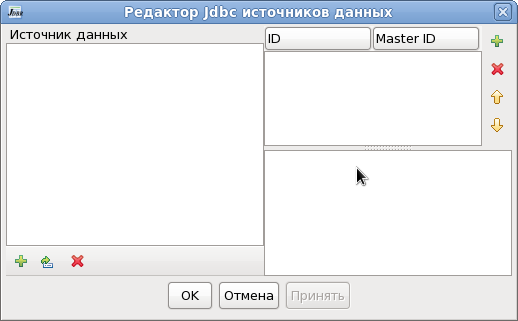
В диалоге добавляем новый источник данных и заполняем необходимые параметры для доступа к базе данных.
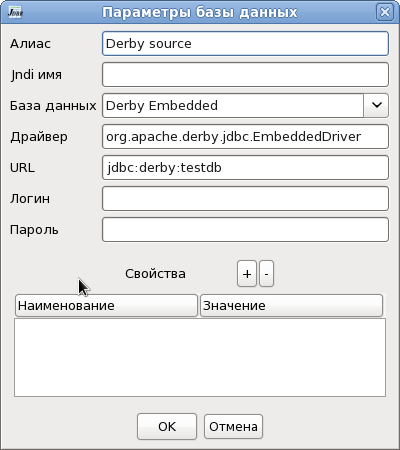
Нажимаем кнопку OK. После этого создаем
новый запрос, в поле ID вводим id запроса - test. По этому id мы будем
обращаться к данным запроса в отчете. Можно вносить сколько угодно
запросов и источников данных, но id запроса должно быть уникальным.
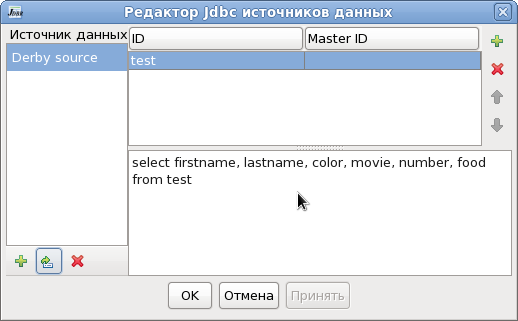
Нажимаем кнопку OK.
Добавим в отчет два столбца (чтобы общее количество столбцов было шесть) по кнопке .
.
По кнопке 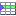 или меню Дизайнер | Группы вставьте строки Заголовок отчета (Title), Заголовок страницы (PageHeader), Детализация (Detail) и Итог отчета (Footer).
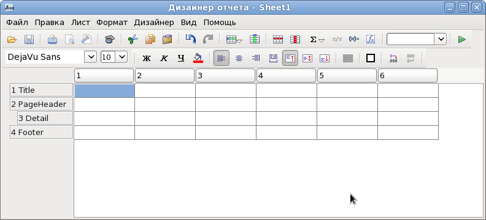
В строке Title в первой ячейке напишем название отчета "Мои друзья"
В строке PageHeader (Заголовок страницы) напишем названия столбцов.
В строке Detail (Детализация) напишем названия полей из базы данных.
Названия полей нужно писать в том виде, в каком они возвращаются базой данных. Большинство баз данных возвращают имена полей в верхнем регистре, независимо от формы написания их в запросе.
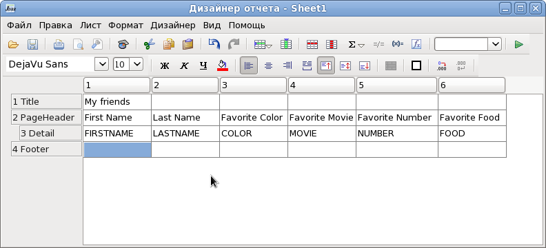
Укажем, что значения ячеек в строке детализации являются полями базы данных. Для этого выделим с помощью мышки или клавиатуры, все ячейки в строке детализации и в поле dataset введем id нашего запроса - test. После ввода нажмем Enter.
Во всех выделенных ячейках перед именем поля появится буква F (field).
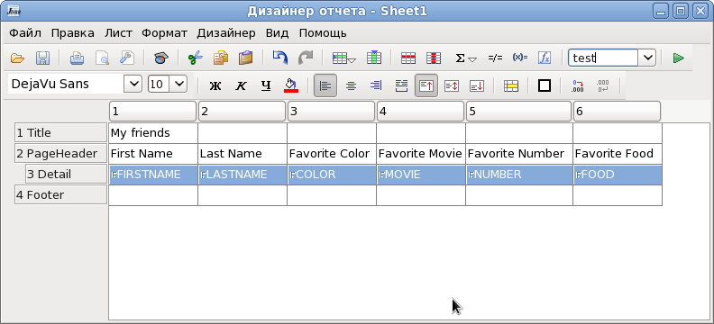
Теперь можно сформировать отчет. Нажимаем на кнопку Сформировать отчет и получаем сформированный отчет.
и получаем сформированный отчет.
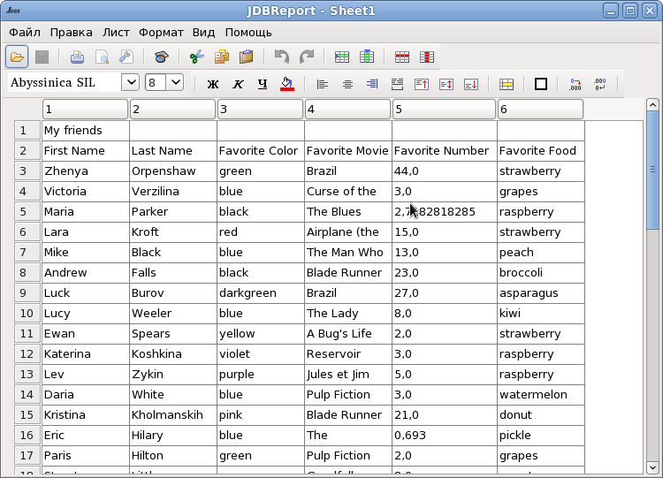
Отчет получился не очень красивым, поэтому мы его закрываем.
Чтобы придать отчету приличный вид нужно отформатировать шаблон отчета.
Выделяем и объединяем ячейки первой строки по кнопке .
Выравниваем текст в ячейках с помощью кнопок форматирования.
Устанавливаем нужный шрифт в ячейках. По кнопке
.
Выравниваем текст в ячейках с помощью кнопок форматирования.
Устанавливаем нужный шрифт в ячейках. По кнопке  устанавливаем цвет заливки ячеек.
устанавливаем цвет заливки ячеек.
Меняем ширину столбцов и высоту строк. Выделяем ячейки строк PageHeader и Detail и устанавливаем границы ячеек.
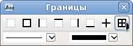
В диалоге свойств отчета (меню Файл | Свойства) меняем наименование отчета и снимаем флажок показывать сетку.
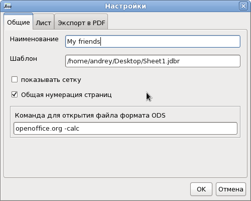
Нажимаем OK.
Открываем диалог настройки страницы (меню Файл | Параметры страницы) и устанавливаем параметры страницы.
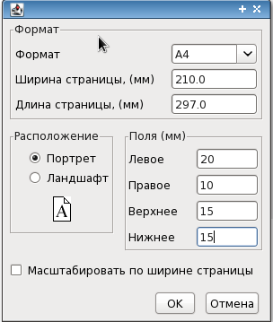
Шаблон будет выглядеть примерно так
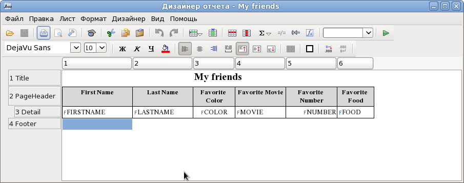
Снова нажимаем на кнопку Сформировать отчет и получаем отчет
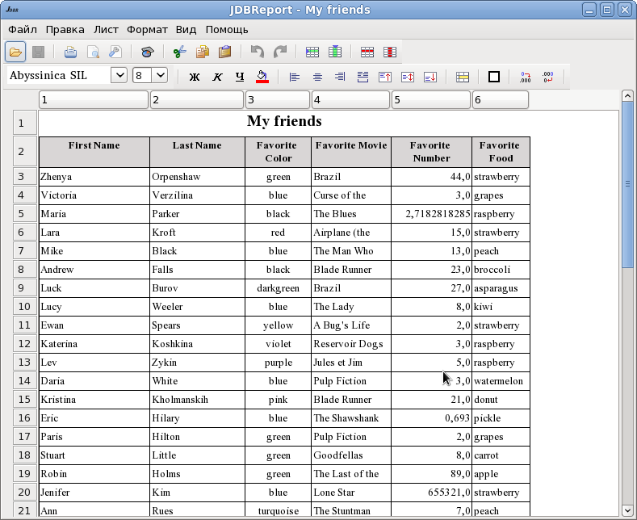
Можно посмотреть представление на странице (меню Файл | Просмотр или кнопка )
)
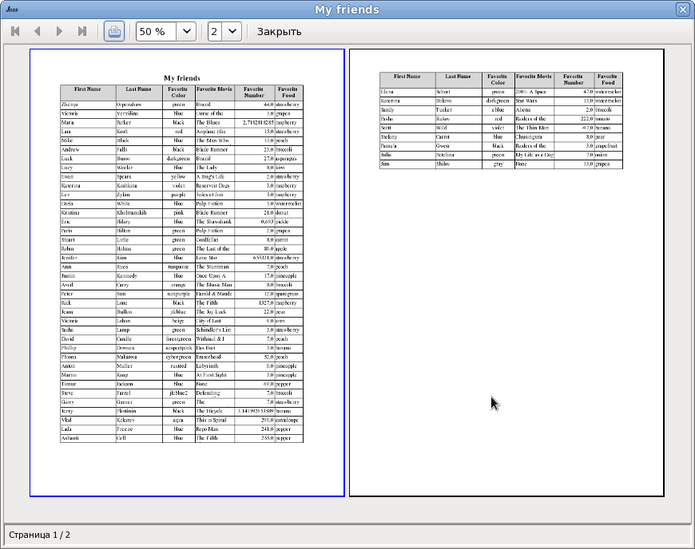
Можно напечатать отчет по кнопке или
меню Файл | Печать.
или
меню Файл | Печать.
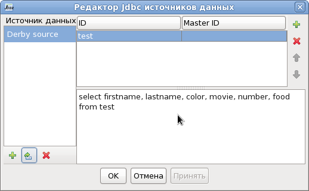
Нажимаем кнопку OK.
Добавим в отчет два столбца (чтобы общее количество столбцов было шесть) по кнопке
.По кнопке 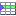 или меню Дизайнер | Группы вставьте строки Заголовок отчета (Title), Заголовок страницы (PageHeader), Детализация (Detail) и Итог отчета (Footer).
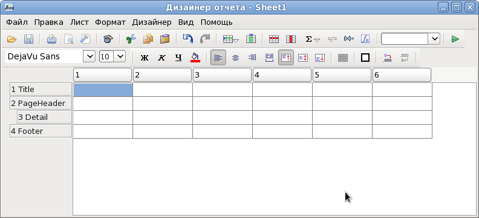
В строке Title в первой ячейке напишем название отчета "Мои друзья"
В строке PageHeader (Заголовок страницы) напишем названия столбцов.
В строке Detail (Детализация) напишем названия полей из базы данных.
Названия полей нужно писать в том виде, в каком они возвращаются базой данных. Большинство баз данных возвращают имена полей в верхнем регистре, независимо от формы написания их в запросе.
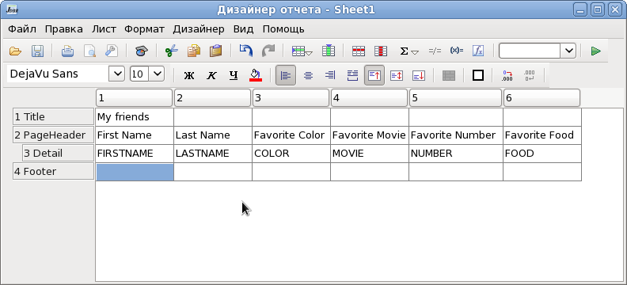
Укажем, что значения ячеек в строке детализации являются полями базы данных. Для этого выделим с помощью мышки или клавиатуры, все ячейки в строке детализации и в поле dataset введем id нашего запроса - test. После ввода нажмем Enter.
Во всех выделенных ячейках перед именем поля появится буква F (field).
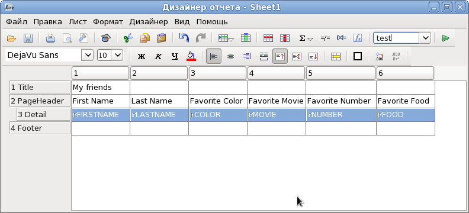
Теперь можно сформировать отчет. Нажимаем на кнопку Сформировать отчет
и получаем сформированный отчет.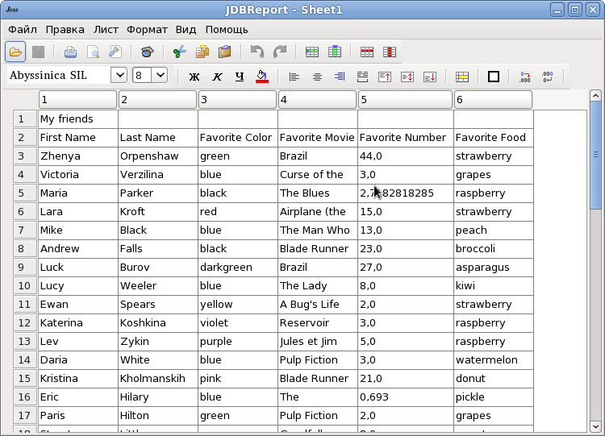
Отчет получился не очень красивым, поэтому мы его закрываем.
Чтобы придать отчету приличный вид нужно отформатировать шаблон отчета.
Выделяем и объединяем ячейки первой строки по кнопке
.
Выравниваем текст в ячейках с помощью кнопок форматирования.
Устанавливаем нужный шрифт в ячейках. По кнопке
устанавливаем цвет заливки ячеек.Меняем ширину столбцов и высоту строк. Выделяем ячейки строк PageHeader и Detail и устанавливаем границы ячеек.
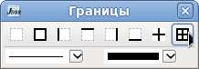
В диалоге свойств отчета (меню Файл | Свойства) меняем наименование отчета и снимаем флажок показывать сетку.
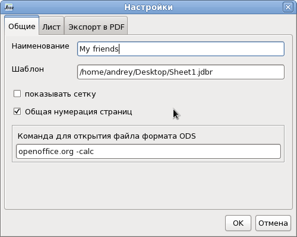
Нажимаем OK.
Открываем диалог настройки страницы (меню Файл | Параметры страницы) и устанавливаем параметры страницы.
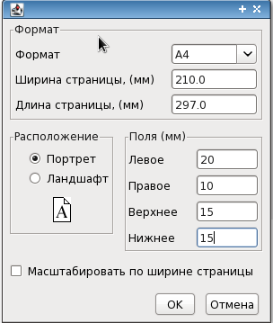
Шаблон будет выглядеть примерно так
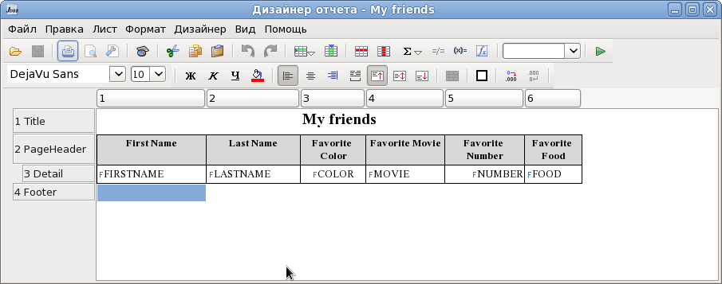
Снова нажимаем на кнопку Сформировать отчет
и получаем отчет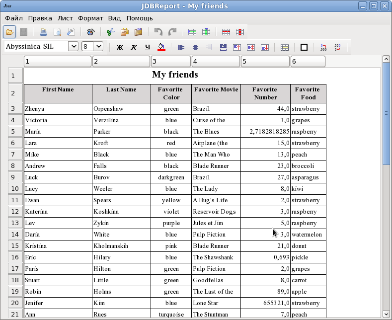
Можно посмотреть представление на странице (меню Файл | Просмотр или кнопка
)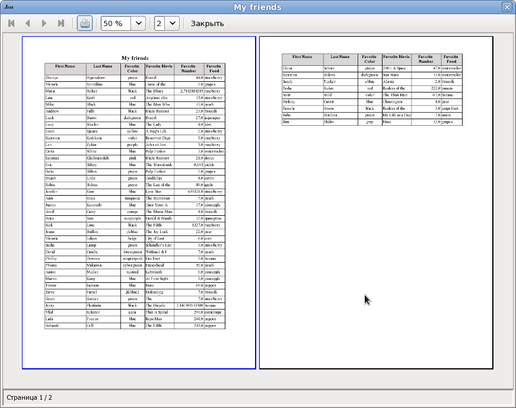
Можно напечатать отчет по кнопке
или
меню Файл | Печать.